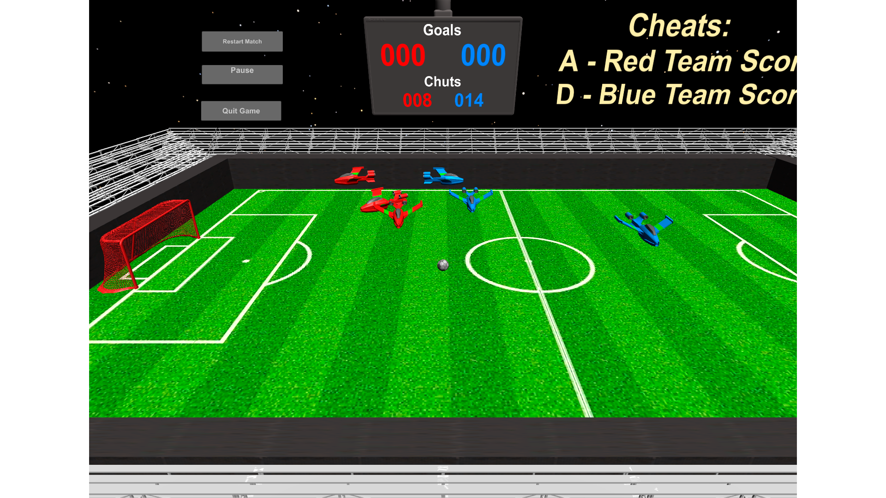
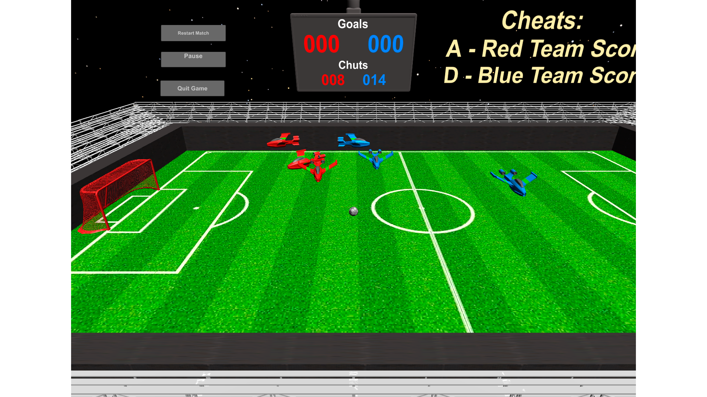

Mi equipito de furbito

Este proyecto fue creado para la asignatura de Inteligencia Artificial con Unity3D.
Este proyecto no puede ser considerado juego como tal ya que en el encontramos dos inteligencias artificiales distintas enfrentadas en un partido de fútbol.
Una de ellas, utiliza una mente colmena, es decir, todas están controladas por un "entrenador" que en todo momento les dice qué tienen que hacer y cómo atacar o defender.
La otra, es una inteligencia artificial cuyos elementos actuan de forma independiente, es decir, se comportan como cerebros individuales. En ella encontramos un atacante, un defensor y un delantero, cada uno con un comportamiento específico que dependerá de la situación de la partida.
Imágenes del juego
 



¿Cómo instalarlo?
Descarga el archivo .zip, extrae los archivos en una carpeta y doble click en IAV.exe para jugar.